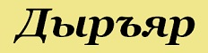

|  | |
Прямая речь, оборотыВ дыръяре нет знаков препинаний — всё выражается аффиксами. Прямая речь выделяется так же, как и любое зависимое предложение или просто причастный оборот, то есть by...ŧy. О том, что это прямая речь, можно легко понять из глагола (если это «говорить», «слышать» и т.д. — то это прямая речь). Пример прямой речи: byŧajŧyenŧoʃsä — Я сказал: «Я люблю тебя». |
|
| © B.E.N. | |